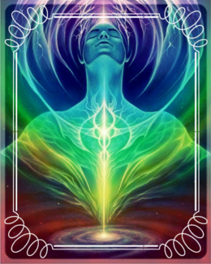

Growing up Jeremy was raised in the Catholic faith, but was always drawn to the mystical and magical spiritual paths that honor and revere nature and the animal kingdom, such as the ways of the Native Americans. During a deep meditation The Blessed Mother Mary appeared to Jeremy and taught him how to integrate his ancestral Catholic faith with a variety of the worlds religions and spiritual practices. She has revealed to him the similarities that are held in all spiritual paths, and he credits her for most of the information he receives during his sessions.
Upon entering the spiritual community Jeremy had found that some of the concepts were a bit hard to grasp and seemed typically un-relatable. Jeremy's mission is to create a practical approach to spirituality and create tools and exercises tailored to each individual. This is important so that more people can reach peace, healing, and discover a better understanding of who they are.
Jeremy has always held a sense of intuitive knowing and empathetic nature, going back to a very early age. In 2013, his gifts opened up in a way he never thought possible and they continue to blossom and evolve every single day. Jeremy is an Intuitive Spiritual Empath, which means that he uses his Intuition (the ability to acquire knowledge without proof, or conscious reasoning) and being Empathic ( the ability to be able to sense/feel what others are feeling, either emotionally, physically, spiritually, mentally or energetically) to facilitate his sessions. In his sessions, Jeremy becomes a Spiritual Medium, a bridge between this World and the Spirit World. He can connect you with a wide array of energies from Passed loved ones, Angels, Ascended Masters, Spirit Guides, Saints, Animal Totems, or your Higher-Self.
Jeremy is always seeking out new spiritual practices and beliefs to share with his clients to aide them in their own spiritual journey. He considers himself "Spiritually Eclectic" which means that he doesn't follow one set path, but rather he discovers the parts of Spiritual practices that resonate most with his soul and incorporates those into his teachings and personal practice. Because of this path Jeremy reaches people from all walks of life, from Pagans to Christians and everyone in between. A direct relationship with our one Creator is at the center of Jeremy's beliefs.
In addition to Spirituality, the realm of Art has always been a saving grace in Jeremy's life. Since early childhood, he has always sought after art as a salvation. The escape that art gave to Jeremy is something he wishes to share with each person he encounters. Now, he strives to bring out the creative side in each individual and combine Art with Spirituality to foster a unique healing experience. Jeremy also creates Spiritually fueled art pieces that are filled with positive intention and healing energy that help people on their journey and navigate them towards healing. Jeremy is honored to be utilizing his gifts to help others & is grateful to be a part of your Journey.
"Mitakuye Oyasin -We are all connected"
- A Native Lakota Sioux Prayer.